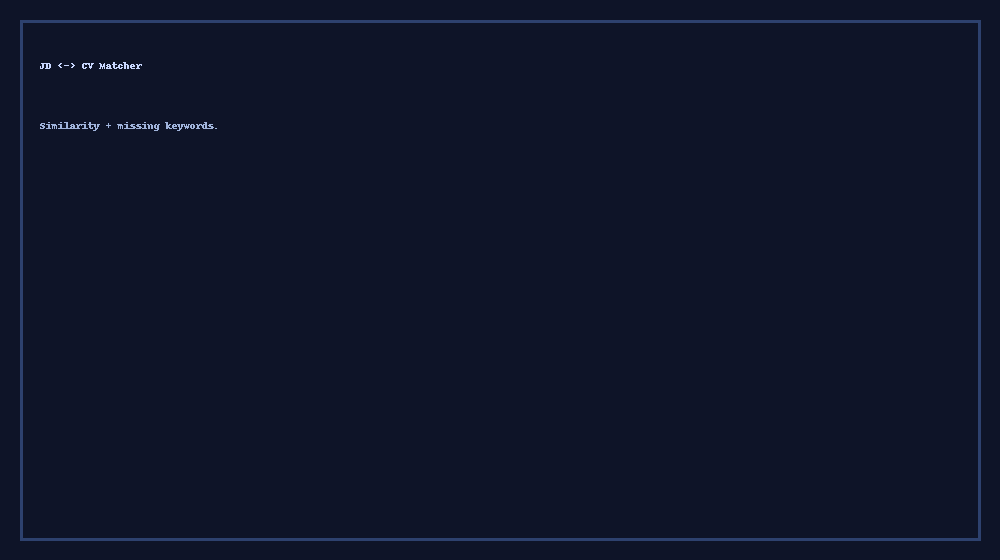

<- Back
NLP
JD <-> CV Matcher
Paste a job description and your CV. It shows a rough match percent and words you might be missing.

Analyze
Copy Results
What this does (simple)
Paste both texts.
Click Analyze to get a percent.
Copy results if you want.